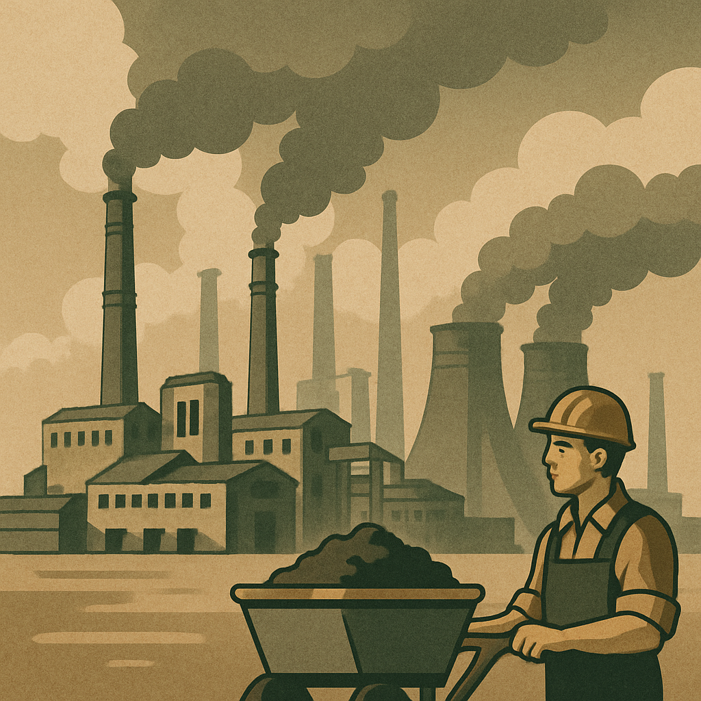
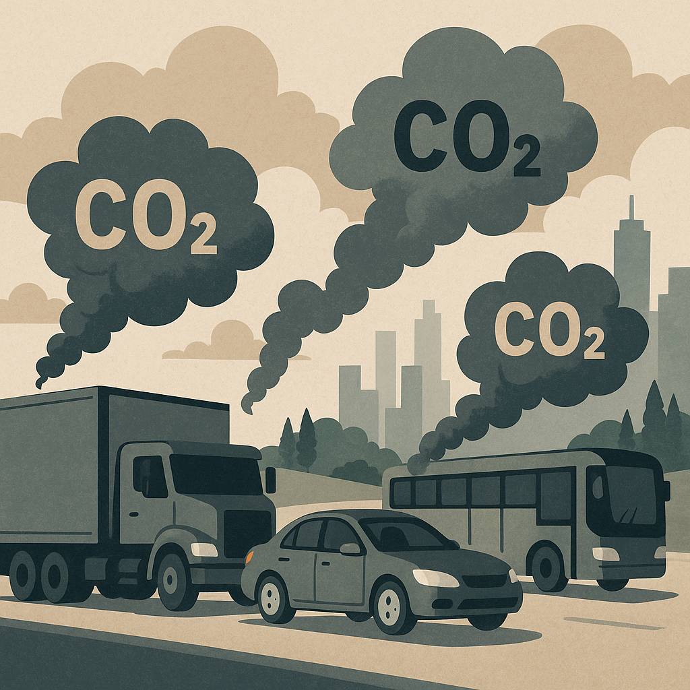
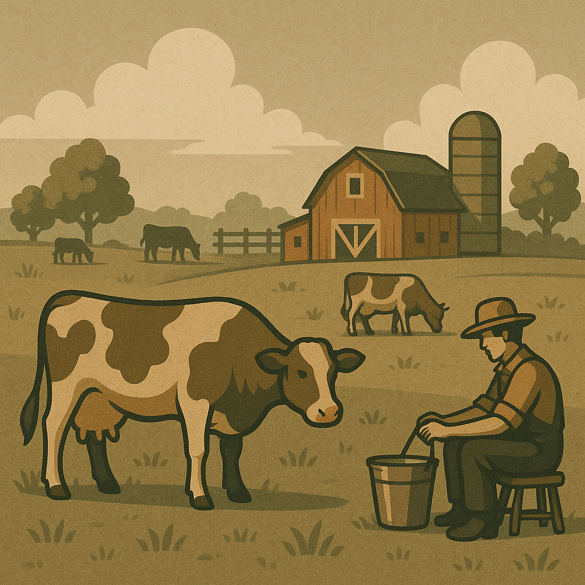
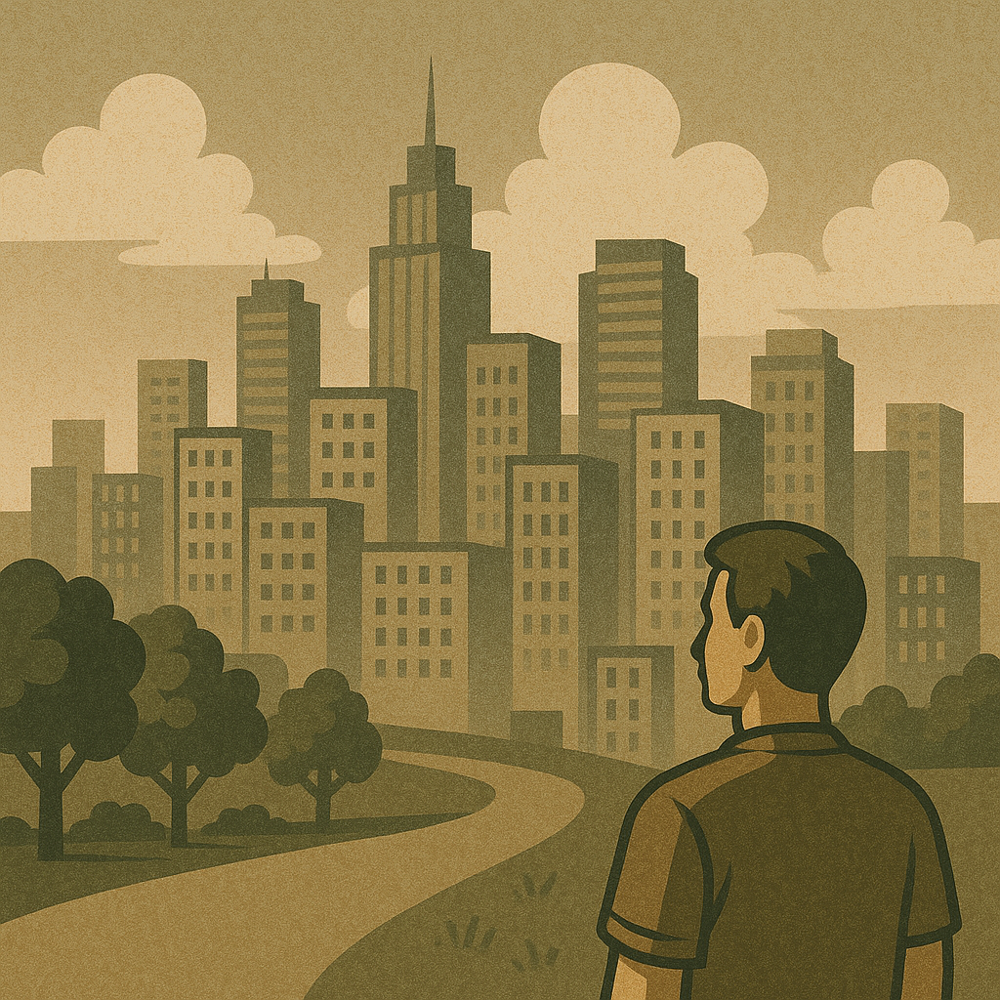

İklim değişikliği, Dünya'nın atmosferi ve okyanusları üzerinde uzun vadeli değişikliklerin meydana gelmesi sürecidir. Bu değişiklikler, sıcaklık, yağış düzenleri ve diğer hava koşullarındaki değişiklikleri içerir. İklim değişikliği, doğal süreçler ve insan etkinliklerinin birleşimiyle ortaya çıkar.

Kömür, petrol ve doğalgaz gibi fosil yakıtların enerji yapımı, ulaşım ve sanayide kullanılması sonucunda atmosfere büyük miktarda karbondioksit (CO₂) ve diğer sera gazları salınır. Bu gazlar atmosferde birikerek dünyanın ısısını tutar, yani sera etkisini artırır. Özellikle sanayi devriminden bu yana fosil yakıt kullanımı çok büyük oranda artmıştır. Bu da iklimin hızla değişmesine neden olur.

Sanayi tesisleri, büyük miktarda karbon salımı yapar. Özellikle gelişmiş ve gelişmekte olan ülkelerdeki yapım faaliyetleri, enerji ihtiyacını artırarak daha fazla fosil yakıt kullanımına yol açar. Aynı zamanda sanayiler, çevreye zararlı atık gazlar ve partiküller yayarak atmosferin yapısını bozar.
Arabalar, uçaklar, gemiler ve diğer ulaşım araçları fosil yakıt tüketir. Bu da atmosfere her yıl milyarlarca ton karbon salınmasına yol açar. Özellikle büyük şehirlerdeki trafik yoğunluğu, hem hava kirliliğini hem de sera etkisini artırır.
Ağaçlar, atmosferdeki karbondioksiti emer ve oksijen yapar. Ancak ormanların yok edilmesiyle bu doğal denge bozulur. Hem daha az karbon tutulur, hem de kesilen ağaçlar çürürken veya yakıldığında atmosfere karbon salınır. Özellikle Amazon gibi tropikal ormanların yok edilmesi iklim sistemini olumsuz etkiler.

Büyükbaş hayvancılık (özellikle inekler) sırasında metan gazı salımı olur. Metan, karbondioksite göre 25 kat daha güçlü bir sera gazıdır. Ayrıca tarımda kullanılan gübreler de hem nitroz oksit gibi sera gazlarını yayar hem de toprak yapısını etkileyerek karbon salımına neden olur.
Doğal alanların yerini beton yapılar alınca ısıyı emen yüzeyler artar. Bu da “ısı adası etkisi” denilen bir duruma yol açar. Şehirler kırsal alanlara göre daha sıcak olur. Aynı zamanda altyapı çalışmaları, trafik ve enerji tüketimi de sera gazı salımını artırır.
Atmosfere salınan CFC (kloroflorokarbon) gibi gazlar hem sera etkisini artırır hem de ozon tabakasını inceltir. Bu gazlar özellikle eski tip buzdolapları, klima sistemleri ve bazı spreylerde kullanılmıştır.
İklim değişikliği sadece insanlar yüzünden değil, doğal olaylar sonucunda da oluşabilir. Örneğin: Güneş aktivitelerindeki değişimler, Volkanik patlamalar (atmosfere toz ve gaz yayarak geçici soğuma yapabilir), Okyanus akıntılarındaki değişimler, Ancak bu etkiler, insan faaliyetlerinin neden olduğu değişikliklerle karşılaştırıldığında oldukça küçüktür.
Dünya genelinde ortalama sıcaklıklar artmaya devam ediyor. Bu, iklimin daha sıcak ve düzensiz hale gelmesine neden oluyor. Bu durum, kuraklıkların, orman yangınlarının artmasına ve su kaynaklarının azalmasına yol açıyor. Sıcak hava dalgaları, özellikle şehirlerde yaşamı zorlaştırıyor ve su kaynaklarını daha da kısıtlıyor.
Kutup bölgelerinde hızla eriyen buzullar, deniz seviyesinin yükselmesine sebep oluyor. Bu, kıyı bölgelerindeki yerleşim yerlerinin su altında kalmasına yol açabilir. Özellikle düşük rakımlı alanlarda sel baskınları ve kıyı erozyonu ciddi tehdit yapıyor. Kıyı şehirleri, büyük felaketlere hazırlıksız kalabiliyor.
İklim değişikliğiyle birlikte fırtınalar, kasırgalar, sel ve kuraklık gibi aşırı hava olaylarının sıklığı ve şiddeti artmaktadır. Bu olaylar, özellikle tropikal bölgelerde büyük hasara yol açabiliyor ve milyonlarca insanın hayatını olumsuz etkiliyor. Ayrıca bu tür felaketlerin ekonomik maliyetleri de çok yüksek olabiliyor.
Kuraklıklar, aniden gelen aşırı yağmurlar ve mevsimsel dengesizlikler, tarım ürünlerinin verimini ciddi şekilde etkileyebilir. Çiftçiler, tarım faaliyetlerini sürdürebilmek için daha fazla zorlukla karşılaşıyor. Bu da gıda fiyatlarının artmasına, kıtlıkların yaşanmasına ve bazen gıda güvensizliğine yol açabiliyor.
İklim değişikliği, doğal yaşam alanlarını yok ediyor ve birçok hayvan ve bitki türünün neslini tükenme noktasına getiriyor. Sıcaklık değişimleri, su kaynaklarındaki azalma, ekosistemlerin dengesini bozar. Özellikle deniz ekosistemleri, mercan resifleri ve kutup bölgelerindeki biyoçeşitlilik tehlikeye giriyor.
Sıcak hava dalgaları, su kıtlığı, hava kirliliği ve yeni bulaşıcı hastalıkların yayılması gibi sağlık sorunları iklim değişikliğinin etkileri arasında yer alıyor. Sıcak hava dalgaları, özellikle yaşlıları, çocukları ve hastalıkları olan bireyleri etkiliyor. Ayrıca, kirlilik nedeniyle solunum yolu hastalıkları ve kalp rahatsızlıkları artabiliyor.
İklim felaketleri, doğal afetler ve su kaynaklarındaki azalma nedeniyle insanlar yer değiştirmek zorunda kalabiliyor. Bu, büyük göçlere ve bazen çatışmalara yol açabiliyor. İklim mültecileri, yeni yerleşim yerlerinde kaynak sıkıntısı, altyapı yetersizliği ve sosyal uyumsuzluk gibi zorluklarla karşılaşıyor.
Fosil yakıtların, yani kömür, petrol ve doğal gaz gibi enerji kaynaklarının kullanımını azaltmak, iklim değişikliği ile mücadelede en önemli adımlardan biridir. Bu emisyonları azaltmak için, yenilenebilir enerji kaynakları (güneş☀️, rüzgar🌬️, hidroelektrik💧⚡ ve jeotermal🌋💨) kullanımı artırılmalıdır. Ayrıca, enerji verimliliği sağlamak için evlerde, binalarda ve sanayide daha az enerji harcayan teknolojiler kullanılmalıdır. Karbon ayak izini azaltmak için, enerji yapımından tüketimine kadar her aşamada çevre dostu teknolojiler benimsenmelidir.
Ormanlar, büyük miktarda karbondioksit emerek atmosferdeki sera gazlarını dengeleme görevini üstlenir. Orman tahribatı, iklim değişikliğini hızlandıran önemli bir faktördür. Bu nedenle, ormanların korunması ve ormansızlaşmanın önlenmesi çok önemlidir. Ayrıca, büyük çaplı ağaçlandırma projeleriyle, atmosferdeki karbondioksit miktarını azaltmak mümkündür. Ormanlar aynı zamanda biyolojik çeşitliliği destekler, su döngüsünü düzenler ve toprağın erozyona karşı korunmasına yardımcı olur.
Tarım, sera gazlarının salınımında büyük bir paya sahiptir. Aşırı gübre kullanımı, metan gazı salınımı ve orman alanlarının tarıma açılması gibi uygulamalar, iklim değişikliğini tetikler. Sürdürülebilir tarım yöntemlerine yönelmek, daha verimli su kullanımı, organik tarım ve minimum işleme gibi tekniklerin benimsenmesi gereklidir. Aynı zamanda, gıda atıklarının azaltılması ve gıda yapımında daha az enerji harcayan yöntemlerin tercih edilmesi iklim değişikliğiyle mücadelede önemli bir rol oynar.
Dünyada yapılan atıkların büyük bir kısmı depolanmadan önce çevreye zarar verir. Plastik atıklar, özellikle okyanusları kirletir ve sera gazı salınımını artırır. Organik atıkların kompostlanması ve atıkların enerji yapımında kullanılması, karbon salınımını azaltmaya yardımcı olabilir. Ayrıca, tüketicilerin tek kullanımlık ürünlerden kaçınarak, daha sürdürülebilir ürünler tercih etmeleri teşvik edilmelidir.
Ulaşım sektörü, iklim değişikliğine neden olan emisyonların önemli bir kaynağıdır. Bu nedenle, elektrikli araçların🚗 ve hibrit araçların🚗 kullanımının artırılması gerekmektedir. Toplu taşıma sistemlerinin güçlendirilmesi🚗, bisiklet yollarının🚲 yaygınlaştırılması ve yaya dostu şehirlerin🏙️ yapılması, karbon salınımını azaltacak önlemler arasında yer alır. Ayrıca, uçakla✈️ seyahat yerine tren🚆 ve otobüs🚍 gibi daha çevre dostu ulaşım yöntemlerinin tercih edilmesi, küresel ısınmayı engellemek adına önemlidir.
İklim değişikliğiyle mücadele, yalnızca bireylerin değil, devletlerin de sorumluluğundadır. Hükümetler, karbon salınımını sınırlayan yasalar çıkararak, sanayileri çevre dostu üretim yöntemlerine geçmeye teşvik edebilir. Ayrıca, uluslararası düzeyde iklim değişikliği ile mücadeleye yönelik anlaşmalar (örneğin, Paris İklim Anlaşması) yapılmalı ve bu anlaşmalara uyum sağlanmalıdır. Küresel ısınmayı 1,5 derece ile sınırlama hedefi, tüm ülkelerin birlikte çalışmasını gerektiren bir hedeftir.
İklim değişikliği ile mücadelede toplumun bilinçlenmesi çok önemlidir. Eğitim sistemlerinde, iklim değişikliğinin etkileri ve çözüm önerileri hakkında daha fazla bilgi verilmeli, çevre dostu yaşam alışkanlıkları teşvik edilmelidir. Aynı zamanda, medya ve sosyal medya platformları aracılığıyla daha geniş kitlelere ulaşılabilir ve bireylerin daha sürdürülebilir yaşam biçimlerine yönelmeleri sağlanabilir.